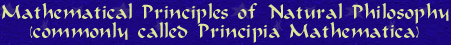

If you buy our boxed set now, we will include, free of charge, this groundbreaking recent release by English mathematician Isaac Newton  | |
Why do the planets orbit the sun? Why do objects fall to the ground when dropped? In this fascinating and innovative work, Isaac Newton explains his astounding new theory of gravity and his laws of motion. Scientific reviewers rave that Principia Mathematica is the first book to contain a unified system of scientific principles that explain the motions of the planets and comets and the behavior of objects on the earth. | |